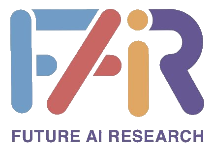
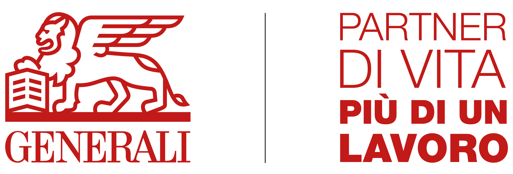
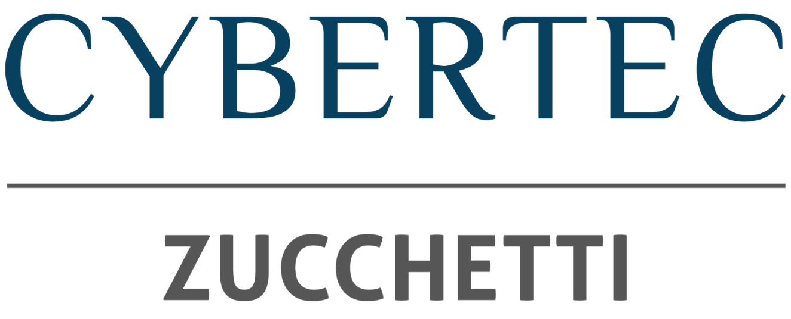

Benvenuto a Ital-IA 2025!
Ital-IA è il quinto Convegno Nazionale CINI sull'Intelligenza Artificiale, organizzato per sviluppare obiettivi comuni tra istituzioni pubbliche, industria italiana e la ricerca scientifica delle università e dei centri di ricerca nazionali. Ital-IA ha l'ambizione di "fare rete nazionale" tra tutte le azioni che si stanno disegnando in questi mesi in Italia per cogliere le potenzialità di sviluppo legate alle tecnologie dell'Intelligenza Artificiale.
Il convegno è organizzato dal Laboratorio Nazionale "Artificial Intelligence ed Intelligent Systems" (AIIS), creato dal CINI (Consorzio Interuniversitario Nazionale per l'Informatica).
Il convegno è organizzato dall'Università degli Studi di Trieste.
Save the date
Ital-IA Workshop tematici: 23 Giugno 2025
Ital-IA Convegno plenario: 24 Giugno 2025
Workshops Tematici
Organizzato da


In collaborazione con
Sponsors
Platinum sponsors:
Gold sponsors:
Silver sponsors:
News
Slide dell'invited talk disponibili
È disponibile la presentazione in formato PDF del talk “The last invention”: what futures is the AI revolution building? di Roberto Trotta.
Programma del 24 giugno e informazioni sulla cena sociale
È disponibile il programma delle sessioni plenarie. Controllate gli ultimi aggiornamenti al programma e le informazioni sulla cena sociale nella pagina del programma.
Evento di formazione beanTech
Lunedì 23 dalle 14:00 alle 15:00 vi sarà un evento di formazione offerto da beanTech su NVIDIA Blueprints e su "AI Infrastructure Design: scalabilità, performance e sostenibilità con le architetture NVIDIA". Maggiori informazioni disponibili sulla pagina dell'evento.
Programma generale disponibile
È disponibile il programma generale di ITAL-IA.
Registrazioni aperte
È possibile registrarsi ad ITAL-IA 2025 alla pagina di registrazione.
Versione finale dei contributi
Sono presenti le istruzioni per la preparazione della versione finale dei contributi con scadenza il 15 giugno 2025
Deadaline estesa
La deadline per l'invio dei contributi ai workshop è estesa nuovamente al 30 maggio 2025
Deadaline estesa
La deadline per l'invio dei contributi ai workshop è estesa al 19 maggio 2025
È aperto il link per l'invio dei contributi
Invia il tuo contributo a https://easychair.org/my/conference?conf=italia2025
È disponibile la Call for Papers
Si veda la pagina dedicata.